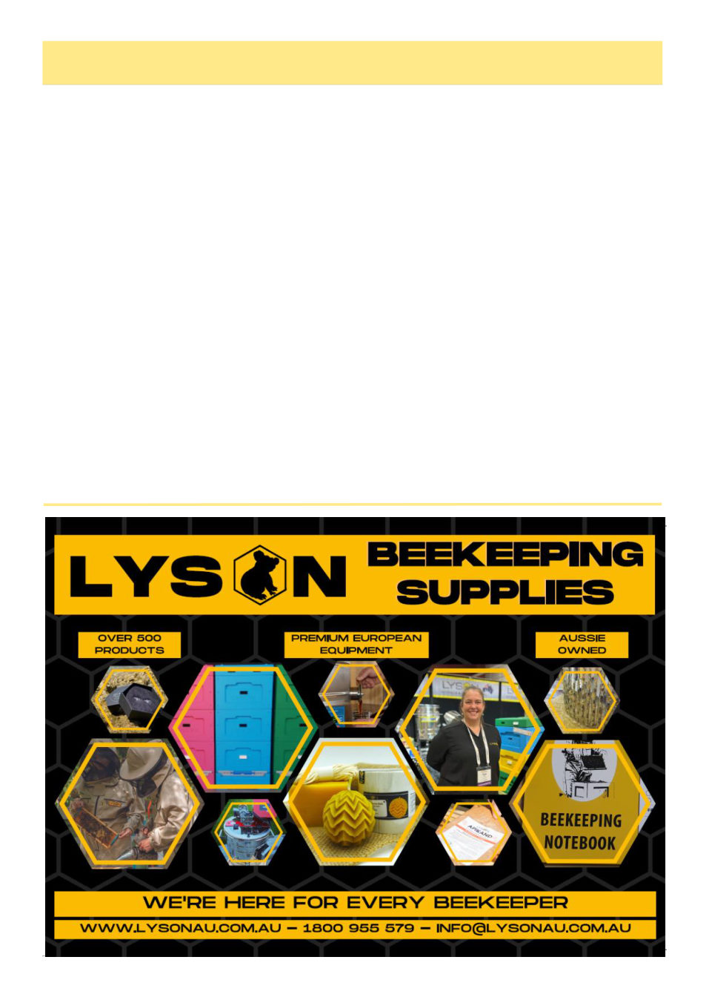

May 2026
17
Prophylactics, cont’d
Scenario 3:
The incoming beekeepers with varroa had been told
to have strips in on arrival, the amount of varroa able to
drift into other hives is reduced by 99%. Varroa-free
beekeepers such as yourself also have a treatment in, so
any of the small number of varroa who do manage to
drift out of infected hives will 99% be killed on arriving
in the hive. Total number of varroa surviving into pre-
viously uninfected hives is almost incalculably low,
varroa does not spread at the almonds.
In which case did you spend less money and have
less impact on your bees? Very obviously scenarios 2
and 3. The spread could have been significantly slowed
down and the cost to industry significantly reduced if
the policy advisors had encouraged prophylactic use of
miticides instead of advising against it.
The above scenarios are backwards looking though,
to a time when we didn’t have mites. Let’s look for-
ward, most commercial beekeepers in Victoria by this
point unfortunately have varroa:
Scenario 4:
So let’s say you go to the almonds, with less than
the detectable threshold of mites because you’re a re-
sponsible beekeeper, but of course your hives will wake
up beside partners from all across Australia. Some of
whom come from hot sweaty places with no brood
break and relied on the “she’ll be right” method. These
hives are itchy with varroa and in intimate proximity
with your own. So 200 mites drift into each of your
hives. You’d come out with detectable levels of mites
and hit threshold in January. Do a treatment then and
you might still have to put another one in in April. If
you had had a treatment in while at the almonds you’d
come right back out again with undetectably low levels
of mites and not hit threshold till May.4
Bottom line is regardless of your current threshold
status, your biggest risk of the year is the almonds (and
possibly ironbark) and if you ensure your mite numbers
are as low as possible coming out of almonds you’ll
have the best shot at a good year. Without protection
you risk leaving with a peculiar burning sensation … in
your wallet from treatment costs.
There’s surprisingly little research on spring mite
immigration, probably because in the United States or
Europe all the hives are just coming out of a long brood
-free winter, but that is not the case with many of the
beekeepers we’ll be sharing paddocks with in the al-
monds.
In wider veterinary medicine, prophylactic treatment
for diseases before specific high risk situations is com-
mon.5 The specific treatment of healthy animals before
being commingled with animals of unknown disease
status is called “metaphylaxis.” In 107 randomized
field trials, preventatively treating healthy cattle before
(Continued from page 16)
(Continued on page 18)